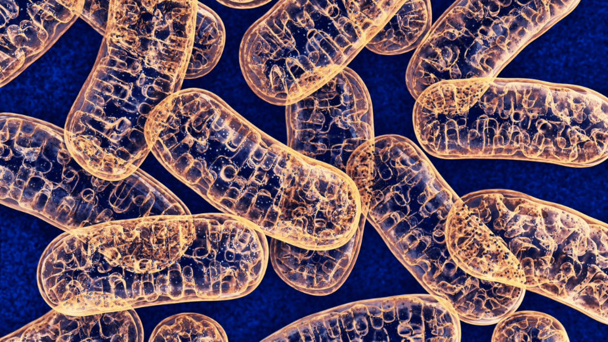

Where Do Organelles Come From?
We all know our cells are full of organelles, but have you ever wondered where they came from? Well, there are many organelles and just as many places they come from, so we'll cover some of the most important organelles and their origins here. These many methods of organelle creation include random distrbution, formation from proteins, and splitting into multiple pieces.
 The first, and most well-known organelles, are the mitochondria (the powerhouse of the cell!). While mitochondria are usually thought of as these independent bean-shaped things, that isn't quite accurate. They are not actually capable (at least in humans) of splitting without outside help, and instead rely on the ER (endoplasmic reticulum) for help dividing and merging with each other. Therefore, durring cell division, mitochondria go the same way as the part of the ER they're attached to into one of the daughter cells.
:max_bytes(150000):strip_icc()/human-cells--illustration-623682423-5c48d355c9e77c00011f4744.jpg) Moving on to slightly less well-known organelles, the Golgi Apparatus and nuclear membrane (sadly lacking any catchy slogans) both are duplicated in a way surprisingly similar to mitochondria. While mitochondria divide with the help of the ER then are randomly distributed, these organelles have a bit more of a relaxed relationship with it outside of mitosis. While they normally are entirely separate, this completely changes during mitosis as they are actually absorbed by the ER before it divides, then recreated from the absorbed elements afterward.
Moving on to slightly less well-known organelles, the Golgi Apparatus and nuclear membrane (sadly lacking any catchy slogans) both are duplicated in a way surprisingly similar to mitochondria. While mitochondria divide with the help of the ER then are randomly distributed, these organelles have a bit more of a relaxed relationship with it outside of mitosis. While they normally are entirely separate, this completely changes during mitosis as they are actually absorbed by the ER before it divides, then recreated from the absorbed elements afterward.
 Having moved through all of those, we end up at the one organelle that seems to be behind all the others: the endoplasmic reticulum. While this organelle has many interesting interactions with other organelles, it acually is rather dull in and of itself (though it does look pretty special in rainbow font). It does something similar to a lot of organelles not listed here, and simply divides into a few large chunks (after picking up a piece here or there of other organelles), splits into the daughter cells, then reforms in both of them. After reading that it may seem unimportant, but remember what it does for all the other organelles.
Having moved through all of those, we end up at the one organelle that seems to be behind all the others: the endoplasmic reticulum. While this organelle has many interesting interactions with other organelles, it acually is rather dull in and of itself (though it does look pretty special in rainbow font). It does something similar to a lot of organelles not listed here, and simply divides into a few large chunks (after picking up a piece here or there of other organelles), splits into the daughter cells, then reforms in both of them. After reading that it may seem unimportant, but remember what it does for all the other organelles.
 So, you know where all (most) of the organelles come from now. What's the point? Well, you now have a better understanding of what's going on inside you, and all it took was a minute or two of your time! If that doesn't satisfy you, then consider this: the icon of this page is a cat, randomly generated every time you reload this page (see the credits), and you got all this information without spending a good hour or two reading a research papaer! If you want to read that, look in the credits, but for now, I hope you're leaving with more appreciation for your new cell-f knowledge!
So, you know where all (most) of the organelles come from now. What's the point? Well, you now have a better understanding of what's going on inside you, and all it took was a minute or two of your time! If that doesn't satisfy you, then consider this: the icon of this page is a cat, randomly generated every time you reload this page (see the credits), and you got all this information without spending a good hour or two reading a research papaer! If you want to read that, look in the credits, but for now, I hope you're leaving with more appreciation for your new cell-f knowledge!
Credits:
Written By:
Kevin M.
Insulted By:
Quinn (obviously)
Information From:
https://www.ncbi.nlm.nih.gov/books/NBK6609/
Images From:
https://www.sciencedirect.com/science/article/pii/S0005272813001850
https://neurohacker.com/mitochondria-functions-for-healthy-aging-what-does-the-mitochondria-do
https://thiscatdoesnotexist.com/
https://www.thoughtco.com/thmb/IYAutc4b3DmXx015yTmb-7FrSuk=/768x0/filters:no_upscale():max_bytes(150000):strip_icc()/human-cells--illustration-623682423-5c48d355c9e77c00011f4744.jpg
http://cronodon.com/files/Cell_ER_labeled.jpg
https://contenthub-static.grammarly.com/blog/wp-content/uploads/2017/11/research.jpg